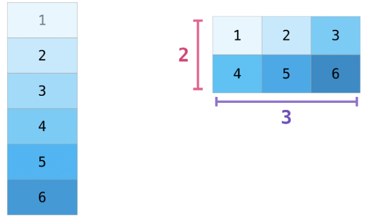
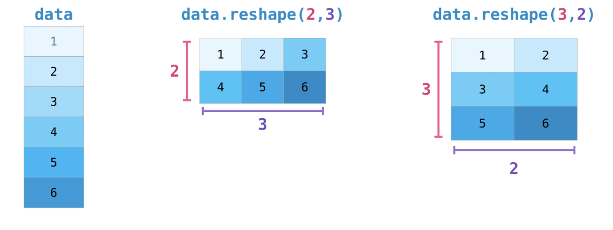
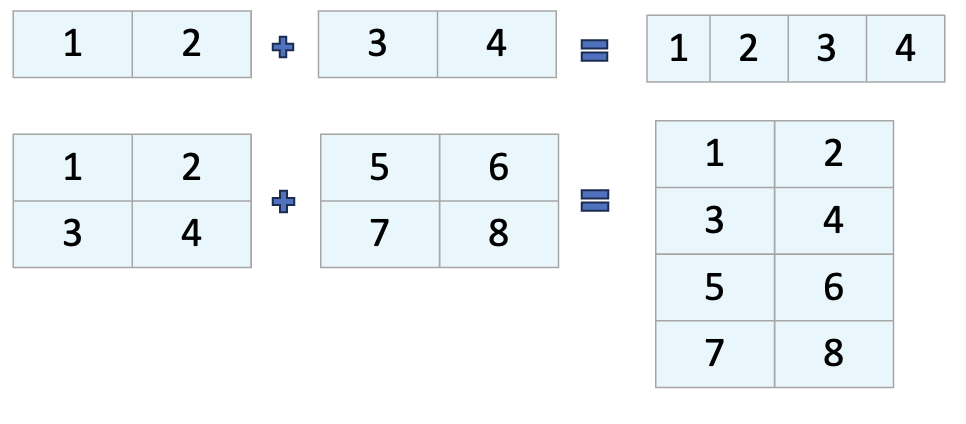

Essential Array Operations with NumPy
Objectives
Reshape arrays to transform data structures while preserving values
Combine arrays using concatenation operations along different axes
Generate descriptive statistics from arrays using NumPy’s built-in functions
Apply the axis parameter correctly to perform row-wise and column-wise operations
Integrate reshaping, concatenation, and statistical functions to solve practical data problems
Time
20 Minutes
Introduction
NumPy is the foundation of Python’s data science ecosystem. At its core is the powerful ndarray object - an efficient, versatile container for large datasets. We’ll explore three essential capabilities:
Reshaping arrays to organize data differently
Combining arrays using concatenation
Generating summary statistics to understand our data
Let’s dive into how these operations can transform the way we work with numerical data.
Reshaping Arrays
Understanding Array Dimensions
Arrays can have different dimensions:
1D arrays (vectors): Simple sequences of values
2D arrays (matrices): Tables with rows and columns
3D arrays and beyond: Multi-dimensional structures

The shape and dimension of an array tell us how data is organized:
import numpy as np
# Create a simple 1D array
a = np.ones(6)
print("Original array:")
print(a)
print(f"Dimensions: {a.ndim}") # Number of dimensions
print(f"Shape: {a.shape}") # Tuple showing size in each dimension
Output:
Original array:
[1. 1. 1. 1. 1. 1.]
Dimensions: 1
Shape: (6,)
Reshaping Arrays uisng reshape

Reshaping allows us to reorganize the same data into different dimensions
The key rule: the total number of elements must remain the same
a = np.array(range(1,7))
# Reshape our 1D array with 6 elements into a 2D array (2 rows, 3 columns)
b = a.reshape(2, 3)
print("\nReshaped to 2x3 array:")
print(b)
print(f"Dimensions: {b.ndim}")
print(f"Shape: {b.shape}")
Output
Reshaped to 2x3 array:
[[1 2 3]
[4 5 6]]
Dimensions: 2
Shape: (2, 3)
Practical Example: Preparing a Simple Grayscale Image for an ML Model
Imagine you have a tiny grayscale image, maybe from a very simple dataset. It’s represented as a 2D grid of pixel values. Many basic machine learning algorithms (like Logistic Regression or simple Neural Networks) expect input data where each row is a single sample (a single image) and each column is a feature (a single pixel value).
Our task is to take a 2D image representation and “flatten” it into a 1D row vector suitable for these algorithms.
import numpy as np
# 2. Imagine a tiny 3x3 pixel grayscale image
# Each number represents the brightness of a pixel (0=black, 255=white)
# This is a 2D NumPy array (a matrix)
image_2d = np.array([
[10, 20, 30],
[40, 50, 60],
[70, 80, 90]
])
print("Original 2D Image Array:")
print(image_2d)
print("Shape of original image:", image_2d.shape) # Output: (3, 3) -> 3 rows, 3 columns
# 3. Prepare for ML: Flatten the image
# Many ML models expect each sample (our image) as a single row.
# We need to convert the 3x3 grid into a 1x9 row (1 row, 9 features/pixels).
# Total number of pixels = 3 * 3 = 9
# Using reshape:
# We want 1 row, and NumPy can figure out the number of columns needed.
# We use '-1' to tell NumPy: "calculate the correct number of columns for me".
flattened_image = image_2d.reshape(1, 9)
# Alternatively, we could be explicit:
# flattened_image = image_2d.reshape(1, 9)
print("Flattened Image Array (Ready for ML Model):")
print(flattened_image)
print("Shape of flattened image:", flattened_image.shape) # Output: (1, 9) -> 1 row, 9 columns
Output
Original 2D Image Array:
[[10 20 30]
[40 50 60]
[70 80 90]]
Shape of original image: (3, 3)
Flattened Image Array (Ready for ML Model):
[[10 20 30 40 50 60 70 80 90]]
Shape of flattened image: (1, 9)
Using -1 as a Dimension
NumPy can automatically calculate one dimension when you use -1:
image_2d2 = np.array([
[10, 20, 30],
[40, 50, 60],
[70, 80, 90],
[100, 50, 60],
[55, 150, 200],
[150, 100, 220]
])
print(f"Flattened image: {image_2d2.reshape(-1, 9)}")
Output
array([[ 10, 20, 30, 40, 50, 60, 70, 80, 90],
[100, 50, 60, 55, 150, 200, 150, 100, 220]])
Array Concatenation
Concatenation lets us combine multiple arrays into a single larger array. This is essential when:
Merging datasets
Building up arrays piece by piece
Combining results from different operations

1D Array Concatenation
Let’s start with the simplest case - joining two 1D arrays:
# Create two 1D arrays
a = np.array([1, 2, 3, 4])
b = np.array([5, 6, 7, 8])
# Concatenate them
combined = np.concatenate((a, b))
print("Concatenated 1D arrays:")
print(combined)
Output
Concatenated 1D arrays:
[1 2 3 4 5 6 7 8]
2D Array Concatenation
When working with 2D arrays, we need to specify the axis of concatenation:
axis=0: Join vertically (collapse rows) axis=1: Join horizontally (collapse columns)
Vertical Concatenation (axis=0)
# Create 2D arrays
x = np.array([[1, 2], [3, 4]]) # 2x2 array
y = np.array([[5, 6]]) # 1x2 array
# Vertical concatenation (default is axis=0)
v_combined = np.concatenate((x, y))
print("\nVertical concatenation (axis=0):")
print(v_combined)
Output
Vertical concatenation (axis=0):
[[1 2]
[3 4]
[5 6]]
Horizontal Concatenation (axis=1)
# Create arrays for horizontal concatenation
p = np.array([[1, 2], [3, 4]]) # 2x2 array
q = np.array([[5], [6]]) # 2x1 array
# Horizontal concatenation (axis=1)
h_combined = np.concatenate((p, q), axis=1)
print("\nHorizontal concatenation (axis=1):")
print(h_combined)
Output
Horizontal concatenation (axis=1):
[[1 2 5]
[3 4 6]]
Concatenation Requirements
For concatenation to work properly:
Arrays must have the same shape except in the dimension you’re concatenating
The non-concatenation dimensions must match exactly
a = np.array([[1, 2, 3]]) # Shape: (1, 3)
b = np.array([[4, 5, 6, 7]]) # Shape: (1, 4)
np.concatenate((a,b), axis=0)
Output
ValueError: all the input array dimensions except for the concatenation axis must match exactly, but along dimension 1, the array at index 0 has size 3 and the array at index 1 has size 4
a = np.array([[1, 2, 3]]) # Shape: (1, 3)
b = np.array([[4, 5, 6, 7]]) # Shape: (1, 4)
np.concatenate((a,b), axis=1)
Output
array([[1, 2, 3, 4, 5, 6, 7]])
Summary Statistics
NumPy provides efficient functions to calculate statistical measures across arrays. These are essential for:
Data exploration and understanding
Identifying patterns and outliers
Summarizing large datasets
| Function | Description | | np.sum() | Sum of array elements | | np.min() | Minimum value | | np.max() | Maximum value | | np.mean() | Arithmetic mean (average) | | np.median() | Median value | | np.std() | Standard deviation | | np.var() | Variance |
axis=None (default): Operate on all elements (flattened array) axis=0: Collapse rows and operate along columns (down) axis=1: Collapse columns and operate along rows (across)
# Create a 2D array
data = np.array([[1, 2, 3],
[4, 5, 6]])
print("Our data:")
print(data)
# Sum of all elements
total = np.sum(data)
print(f"\nTotal sum: {total}") # 21
# Column sums (axis=0)
col_sums = np.sum(data, axis=0)
print(f"Column sums: {col_sums}") # [5 7 9]
# Row sums (axis=1)
row_sums = np.sum(data, axis=1)
print(f"Row sums: {row_sums}") # [6 15]